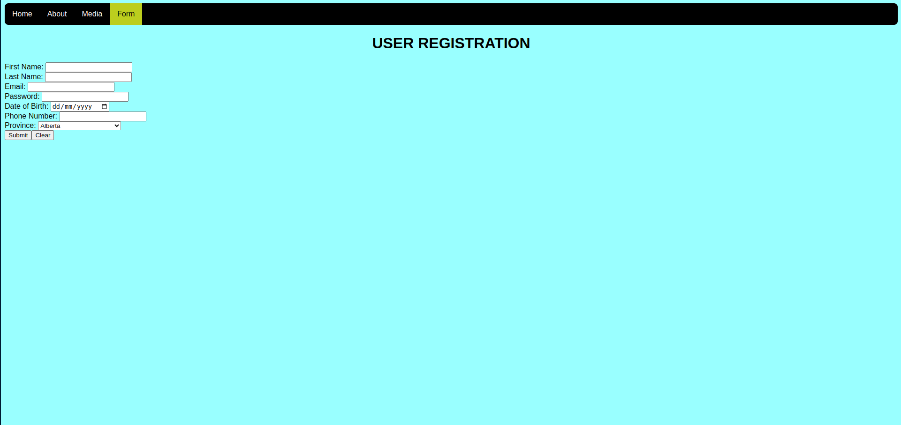

Lab 10 - Introduction to PHP & Forms
Overview
This week's lab will cover the following:
- Installing PHP on your web server.
- Building HTML forms to collect user information.
- Using different types of input fields.
- Describing PHP syntax.
- Using PHP variables to store information.
- Using a PHP script to parse and validate form data.
Lecture Slides
Introduction to PHP
What is PHP?
PHP originally stood for Personal Home Page, but is now a recursive acryonym for PHP: Hypertext Preprocessor. It is a widely-used open source scripting language. PHP is a server-side scripting language, meaning scripts are executed on a server and the script's output is sent to the browser. It is free to download and use.
What is a PHP script?
A php script can contain text, HTML, CSS, JavaScript and PHP code. PHP supports two modes of use, any code written between the opening and closing PHP tags <?php & ?> will be interpreted as PHP. Anything outside of these tags is interpreted as HTML. While you can use built in functions such as print or echo to print out HTML within the PHP tags, it's generally considered bad form. Additionally, you lose the advantage of any color coding/tag matching your text editor does for the HTML as anything between single or double quotes in PHP comes out as all the same colour. PHP statements terminate with a semi-colon(;).
PHP code is executed on the server, and the result is returned to the browser as plain HTML. Unlike HTML or CSS, PHP code is not viewable in the browser by viewing page source. In order for PHP scripts to be interpreted properly by the server, the must have extension ".php".
Installing PHP
Perform the following steps:
- Start the AWS learner lab.
- Login to your www instance using SSH.
Issue the following commands to update your system and install php.
sudo apt -y update; sudo apt -y install php
Issue the following command to confirm PHP has been installed. You should see the output /usr/bin/php
which php
Creating your first PHP script
Using vi on your www instance, create a new file
sudo vi /var/www/html/hello.php
Insert the following code:
<?php echo "Hello World!"; ?>
To do:
Open a web browser and access hello.php from your web server. What do you see? View the page source. What do you notice about the output?
Modifying a PHP script from a provided template
Open the file called form.php in your Labs6-10 repository. Notice some of the code has been provided for you (along with this file). Create the html portion of the page first to meet the following criteria. Refer to your previous lab instructions to do each of the following if needed.
- Use the HTML5 doctype declaration
- Set the Title to "Form", without the quotes
- Insert meta tags indicating the encoding (charset) of utf-8, viewport and the author to your name
- Insert a comment indicating your name and student number
- Link your style sheet to the page
- Make use of the main tag
- Copy your navigation bar from your index page and modify it to properly indicate your current page
Introducing html forms
Forms are used as a tool to take user input data and pass it to a program running on a server for server side processing. First you will create a form that will not interact with a server, as that requires a server side scripting language (such as PHP) for this. You will then add the PHP code to process the form.
Beginning your form
Forms begin and end with the <form> tag. They can contain several different tags, such as buttons and various types of input fields. The types of input fields have been expanded on substantially in HTML5.
Adding some attributes
The form tag has two commonly used attributes. These are action and method. Action defines the action to be performed when the form is submitted. This is always the name of the script on the server that will be processing your form.
The method attribute specifies the HTTP method to be used when submitting the form data. This can be either GET or POST. When you submit a form using GET, the form data is sent in the packet header and is visible in the page address field. This should not be used if your data is sensitive. When you submit a form using POST, the form data is sent in the packet body and isn't visible in the page address field.
To do:
Add the method attribute to your form tag, and set it to "post". A sample of what you should have follows.
<form method="post" action="form.php">
Add a heading level 1 tag, with the contents "User Registration"
About input fields
Some common input types are:
- text - will appear as plain text
- password - will display the input as centered dots to the user
- radio - will display a radio button, used for a single input in that selection
- checkbox - will display a check box, used for zero or more choices in that selection
- submit - will display a submit button
- reset - will display a reset button
HTML5 adds several new input types, such as:
- date - allows the user to choose a date through a pop up calendar
- email - used to validate an email address client side
- tel - used to validate a telephone number client side
For a more complete list of form input types, have a look at w3schools.
Adding input fields
Add a field for First Name, with a type of text and a name of firstName
First Name: <input type="text" name="firstName" value="<?php echo $fName;?>"><span class="error"><?php echo $fNameErr;?></span>
Each input field must have a name attribute to be submitted. If you leave this out, the data from that field won't be sent to the server for processing. The embedded PHP code are the variables your PHP script will use. These will be explained later in the lab.
To do:
Using the above First Name input field syntax, and the input types described above that add the following fields to your form:
- Last Name with a type of text, a value of $lName, and error $lNameErr
- Email with a type of email, a value of $email, and error $emailErr
- Password with a type of password, a value of $password, and error $passwordErr
- Date of Birth with a type of date, a value of $dob, and error $dobErr
- Phone Number with a type of tel, a value of $phone, and error $phoneErr
Adding a dropdown list for province
Below your city input field, you are going to add a drop down list where the user can select their province. This requires a couple different tags. To create a dropdown list, use the <select> tag, as demonstrated below.
<select name="province"> </select>
Notice the name parameter. This declares the name in the form data that would store the information - like a variable. You will use this to process your form with PHP. Ideally when learning server-side scripting, the variable in use on the server should match this for simplicity (but doesn't have to).
Now it's time to add some options to our list. List options are encapsulated with an <option> tag, contain a value and text inbetween the opening and closing tag will appear as the option in the drop-down. Add the following option to your select list.
<option value="Alberta">Alberta</option>
Options will appear in the order you put them in. There is no way to sort them using html.
To do:
Using the above sample, add options to your list for the following provinces
- British Columbia
- Manitoba
- New Brunswick
- Newfoundland and Labrador
- Northwest Territories
- Nova Scotia
- Nunavut
- Ontario
- Prince Edward Island
- Quebec
- Saskatchewan
- Yukon
Form Finishing Touches
All your form needs now, are a submit and clear button, as well as the closing tag. Add the buttons using the following sample. Note whatever text you add to the value parameter, is what appears on the button.
<input type="submit" name="submit" value="Submit"><input type="reset" name="clear" value="Clear">
And finally, close your form with the </form> tag.
Save and view your page in the browser. Notice all the input boxes appear on one line, as they're in-line tags. You can clean this up a bit by adding some break tags at the end of each.
To do:
Make use of the <br> tag to clean up your form so it looks similar to the sample provided.
Stylizing your form with CSS
Forms have a lot of styling options that can be applied using CSS. Use the resources provided by w3schools to apply some CSS to your form.
Parsing the form with PHP
Look at the PHP section of the form.php template you have been working in. Some code was provided, but most of it was left out and you were provided comments instead. Fill in the Author and Date information.
What is a variable?
A variable is a named location in memory used to store a value. The value can change over the course of a script or program. Think similarly to algebra, where you assign x or y as an unknown value in an equation and solve for it. Unlike algebra, variables in programming are declared knowing how they're going to be used and what type of information will be stored in them. PHP supports dynamic or static typed variables.
- Dynamic variables
- With dynamic typed variables, the program determines what type of data a variable contains based on the context it is used in.
- Static variables
- With static typed variables, you must declare a type when defining the variable. That variable can then only store that type of data. These are more secure in many ways, but a bit more difficult to deal with.
You will be using dynamic variables in this lab. It is recommended when using variables that you give them meaningful names that reflect the intended purpose. PHP has no command for declaring a variable, the variable is created when you assign a value to it.
PHP Variable Naming Rules
Variable names:
- Begin with the dollar sign($) followed by the name of the variable
- Can only begin with a letter or underscore
- Can be made up of letters, numbers or underscores
- Cannot be a reserved PHP command word
- Are case sensitive
Recommendations for naming variables
- Declare all variables at the top of your file
- Do not use numbers. What is date1 vs. date2?
- Use descriptive terms like counter, name, price
- Camelcase is a common practice where you combine multiple words to form a variable, capitalizing the first letter of each word. IE: errorCounter, familyName, unitPriceDiscount
To declare a variable, use the following syntax.
$varName = value;
If your value is a string, double quotes around it's entirety will tell the script to treat the whole thing together. Otherwise you may get syntax errors.
Initalizing the variables
You need to initilize all the variables you are going to use within the PHP script. Usually a programmer will do this as they go. However, since you are working from a planned example we can do that now. Find the comment in your code that matches the top line (below) and type the following (you will learn more than if you copy and paste).
# Initialize variables, without this you will get an error $fName = $fNameErr = $lName = $lNameErr = $email = $emailErr = $phone = $phoneErr = $dob = $dobErr = $password = $passwordErr = $province = $msg = ""; $valid = FALSE;
Conditional Logic (IF statements)
The if control structure is essential to programming and scripting. Regardless of what language you're learning to write your code in, the syntax means IF this condition is met DO this action. Whatever code that follows will only execute if the condition is met. You can include multiple IF statements within a code block using elseif, with a default instruction defined with else. Else conditions are executed if none of the previous conditions have been met.
You're going to use an if statement to check if the form was submitted using the POST method (via the $_SERVER global variable, which is actually an array). If it was, you can start processing your form. Again, find the comment in your code that matches the top line (below).
# If the form was sent using the POST method
if ($_SERVER["REQUEST_METHOD"] == "POST") {
Validating User Data
When and Why to validate?
Any data that comes from an external source (usually via a form from a user) should be validated. Validation is the process of checking the data to ensure it contains the right information and in the correct format. This is done to ensure anything entered into a database is consistent. It also helps prevent malicious code like an SQL injection.
How to validate form data
Validating form data is a complicated task, and one suited for a lab unto itself. The process uses a combination of tools in conjunction with if statements to test data to ensure it meets specified requirements. You will do some very simple validation: if the field is not empty, the user has submitted something; so you can process the form.
If the first name input is empty, set a meaningful error (to be displayed using the error variables you initilized above) and set the validation flag to FALSE.
# If first name is blank
if ( empty($_POST["fName"]) ) {
# Store the error message for first name in a variable
$fNameErr = "* First Name cannot be empty";
# Set valid to FALSE
$valid = FALSE;
If (else if) the last name input is empty, repeat the above steps.
# Else if last name is blank
} elseif ( empty($_POST["lName"]) ) {
# Store the error message for last name in a variable
$lNameErr = "* Last Name cannot be empty";
# Set valid to FALSE
$valid = FALSE;
If (else if) the email input is empty, repeat the above steps.
# Else if email is blank
} elseif ( empty($_POST["email"]) ) {
# Store the error message for email in a variable
$emailErr = "* Email cannot be empty";
# Set valid to FALSE
$valid = FALSE;
If (else if) the phone input is empty, repeat the above steps.
# Else if phone is blank
} elseif ( empty($_POST["phone"]) ) {
# Store the error message for phone number in a variable
$phoneErr = "* Phone number cannot be empty";
# Set valid to FALSE
$valid = FALSE;
Back to the main if block, else the form is valid. You can process the form. The below code first retrieves the input fields from the $_POST global variable and stores it in the variables you initialized above. Then, uses some built in functions to remove embedded, leading and trailing blanks.
# Else, it is valid
} else {
# Retrieve the input from the form and store it in appropriate variables
$fName = $_POST['fName'];
$lName = $_POST['lName'];
$email = $_POST['email'];
$phone = $_POST['phone'];
$province = $_POST['province'];
$dob = $_POST['dob'];
# Remove any embedded, leading and trailing blanks
$fName = trim(str_replace(" ","",$fName));
$lName = trim(str_replace(" ","",$lName));
$email = trim(str_replace(" ","",$email));
$phone = trim(str_replace(" ","",$phone));
Finally, build a meaningful message telling the user their form has been processed. Normally you would then connect to a database and insert the data, but that is beyond the scope of this lab (and course).
# Join first and last name together, storing the result in $fullName $fullName = $fName . " " . $lName; # Create a message using the $fullName variable $msg = "Hello " . $fullName . "<br> Your email is: $email <br>" . "You were born on: $dob <br>" . "Your phone is: $phone <br>" . "You live in $province <br>" . "This form has been processed using php."; # Normally at this point you would connect to a database and insert the data, but that is beyond the scope of this course } } ?>
Modifying the HTML form to display the message
Insert the following code on a new line between the closing form tag and closing main tag.
<?php echo $msg; ?>
Viewing your form on the server
Open a web browser and access form.php from your web server. If you recieve a 500 level error code, it means you have made a syntax error somewhere in your PHP. You could go through the lab line by line and compare, or you could look at Apache's error log. To do that, access the command line on your www instance and issue the following command:
sudo tail -f /var/log/apache2/error.log
Now refresh your webpage in the browser. You should see an error in your terminal indicating what line the syntax error is on. Look for missing semi-colons and misspelled variables, as they are common errors.
Completing the Lab
Upon completion of this lab you should have a functional form. Your page should validate using the w3schools html validator & css validator. To submit your lab you need to submit the code to your GitHub repo (which you did in already in the lab). Additionally, you need to submit a screenshot of it running your server to the assignment folder in eCentennial. Your page should look similar to the following:
Exploration Questions
- What tag did you use to start your form?
- What is the difference between a form submitted through GET vs POST?
- What input types did we use for the form?
- How do you add different items to a select dropdown list?
- What is the difference between a submit button and a reset button?
- What does the float parameter do?
- What does setting the margin attribute to auto accomplish?
- What information does the action attribute provide to the form?
- What is a variable?
- What is the difference between dynamic and static typed variables?
- What global variable did you use in PHP to verify the method the form was requested with?
- What does the $_POST global variable contain?